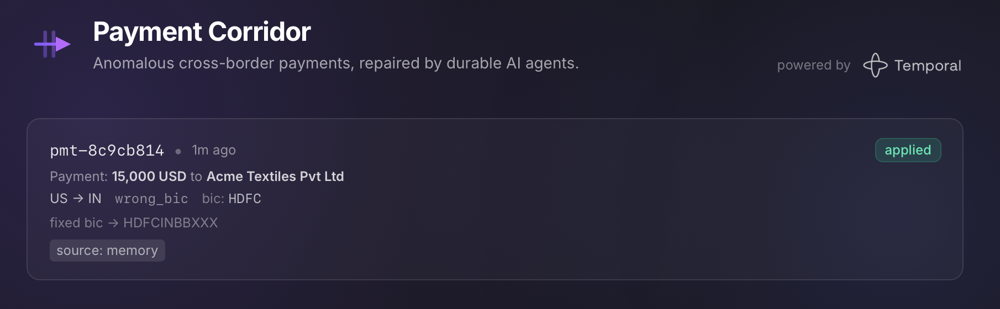

Trace one correction through the coordinator, its agent child workflows, and the memory-first gate.
Point to exactly where determinism is preserved — and why it must be.
Deliver a human decision to a running workflow with a Signal.
Why Temporal here
Agentic payment repair is a durable-execution problem
survive crashes
Every model call runs as a Temporal activity, so an agent's reasoning
survives a worker restart and replays deterministically. No in-flight
correction is ever lost to a redeploy.
human oversight
A low-confidence correction simply waits — durably, for as long
as you allow — for a human decision. No queues, no cron, no lost timers.
no lock-in
The same code runs on any cloud or on Kubernetes. Payloads can be
encrypted end to end — a fit for banking's compliance constraints.
Step 00
The application, end to end
What it does, why it is shaped this way, and how one payment flows through it.
The app
What you'll be working with

The operator's home view — every anomalous payment and its repair. Here a
US→IN wrong-BIC payment was fixed from corridor memory and applied, with
no model call.
Scope
A teaching example, not a product
simplified on purpose
One anomaly, one field to fix. Real cross-border payments carry far
more — the domain is trimmed so the durable-execution story stays in
focus.
patterns first
Every feature you enable exists to show a Temporal pattern: durable
workflows, agents, signals, timers, entity memory, encryption,
observability.
not production
No real banking rails, settlement network, or compliance engine. Treat
it as a workshop harness, not a system to ship.
Architecture
One gateway, two namespaces
%%{init: {'flowchart': {'nodeSpacing': 28, 'rankSpacing': 30, 'subGraphTitleMargin': {'top': 8, 'bottom': 6}}}}%%
flowchart LR
Sim[simulator] --> GW
User[operator browser] --> GW
GW[Gateway single HTTP entry] --> WEB[App · Web UI]
GW --> API[Payments API]
GW --> TUI[Temporal Web UI]
subgraph T[Temporal]
subgraph NSROW[" "]
direction LR
subgraph PNS[payments namespace]
Worker[Payments worker] --> Coord(("Coordinator + agent children"))
end
subgraph MNS[memory namespace]
MemSvc[Memory service] --> Mem[(Corridor memory)]
end
end
end
API -->|start · list · approve| T
Coord -->|HTTP| MemSvc
classDef client fill:#0d1b33,stroke:#3b82f6,color:#cfe0ff,stroke-width:1.5px;
classDef temporal fill:#0c2a26,stroke:#2dd4bf,color:#d6fff5,stroke-width:1.5px;
classDef store fill:#10241c,stroke:#4ce0a0,color:#ccf7e4,stroke-width:1.5px;
classDef external fill:#241033,stroke:#c026d3,color:#f0ccff,stroke-width:1.5px;
classDef ns fill:none,stroke:#64748b,stroke-width:1.5px,stroke-dasharray:6 4,color:#94a3b8;
classDef tgroup fill:none,stroke:#2dd4bf,stroke-width:1.5px,color:#2dd4bf;
classDef invis fill:none,stroke:none,color:none;
class Sim,User,GW,WEB,API client;
class Coord,Worker,MemSvc temporal;
class Mem store;
class TUI external;
class PNS,MNS ns;
class T tgroup;
class Thead,NSROW invis;
Client / entryTemporalMemory storeObservability
External callers only ever speak HTTP to the gateway. Payments runs in its own
Temporal namespace; corridor memory is a separate service in its own namespace,
reached over HTTP.
Lifecycle
One correction, start to finish
sequenceDiagram
participant API as payments API
participant Coord as Coordinator
participant Agent as agent child workflows
participant Mem as corridor memory
participant LLM as LLM
API->>Coord: start workflow (anomaly)
par both agents run concurrently
Coord->>Agent: execute child workflow
Agent->>Mem: read_corridor_memory
alt confident pattern in memory
Mem-->>Agent: correction (source = memory)
else memory miss
Agent->>LLM: agent.run (durable)
end
end
Note over Coord: gate — apply only if compliant AND confidence >= 0.75
Coord-->>API: correction outcome
The happy path, start to finish. The coordinator fans out to both agents at
once. Each checks memory before the model. The gate then applies the fix or
holds it for a human.
Step 01
Getting started
Bring the stack up and correct your first payment — end to end.
Step 01 · Hands-on
Bring it up, correct your first payment
$ make dev The stack is up. Open: Web UI http://localhost:8080 Temporal Web UI http://localhost:8080/temporal $ make simulator scenario: memory-hit payment : pmt-3f9a2c1d workflow: correction-pmt-3f9a2c1d accepted: submitted to http://localhost:8080/api/payments/v1/anomalies
Predict first: the default scenario is a seeded US->IN
wrong-BIC anomaly. Will either agent call the model — and what will the
correction's source be?
Step 02
Durable agents & orchestration
Read the baseline: a coordinator, two agent child workflows, the memory-first gate, and determinism.
Step 02 · Baseline
A coordinator, two agents, one gate
instruction agent
A payments-operations expert. Proposes the smallest fix that lets the
instruction settle — a valid BIC, a required intermediary bank.
compliance agent
A compliance officer. Does not propose a fix — it returns a
verdict on whether a compliant correction is even possible.
the gate
Applies the fix only when the verdict clears it and
confidence ≥ 0.75. Anything else is held — fail-closed.
Orchestration
Fan-out to child workflows
flowchart LR
Coord(("Coordinator")) --> I["Instruction agent child workflow"]
Coord --> C["Compliance agent child workflow"]
I --> Gate{"Gate compliant AND confidence >= 0.75"}
C --> Gate
Gate -->|APPLY| Apply["apply_correction activity"]
Gate -->|REVIEW / NO_PROPOSAL| Hold["hold · fail-closed"]
classDef temporal fill:#0c2a26,stroke:#2dd4bf,color:#d6fff5,stroke-width:1.5px;
classDef activity fill:#2a2410,stroke:#f59e0b,color:#ffe9c2,stroke-width:1.5px;
classDef human fill:#12203a,stroke:#6366f1,color:#d6dcff,stroke-width:1.5px;
class Coord,I,C,Gate temporal;
class Apply activity;
class Hold human;
Workflow / gateActivityHeld for human
asyncio.gather(..., return_exceptions=True) makes the fan-out
resilient — one agent failing degrades gracefully instead of failing the
whole correction.
Concurrent child workflows
Fan out, then gate on both
# both agents run concurrently, each as its own child workflow
results = await asyncio.gather(
workflow.execute_child_workflow(InstructionAgentWorkflow.run, anomaly),
workflow.execute_child_workflow(ComplianceAgentWorkflow.run, anomaly),
return_exceptions=True, # one agent failing ≠ total failure
)
proposal, verdict = results # gather preserves order
The coordinator awaits both agent child workflows at once.
return_exceptions=True keeps one agent's failure from taking
down the whole correction — the gate then decides on whatever came back.
A known high-confidence pattern is returned without a model call — which is why
the seeded US->IN / wrong-BIC path is fully offline.
Determinism
Deterministic workflow, all I/O in activities
flowchart LR
subgraph WF["Workflow code · deterministic"]
d1["no wall-clock"]
d2["no network"]
d3["no randomness"]
end
subgraph IO["Activities & durable agents · all I/O"]
a1["read / write memory"]
a2["apply_correction"]
a3["model requests"]
end
WF -->|execute_activity| IO
style WF fill:#0c2a26,stroke:#2dd4bf,color:#d6fff5,stroke-width:1.5px;
style IO fill:#2a2410,stroke:#f59e0b,color:#ffe9c2,stroke-width:1.5px;
classDef tnode fill:#0c2a26,stroke:#2dd4bf,color:#d6fff5;
classDef anode fill:#2a2410,stroke:#f59e0b,color:#ffe9c2;
class d1,d2,d3 tnode;
class a1,a2,a3 anode;
Deterministic workflowActivities & agents (I/O)
The HTTP call to memory happens in the read_corridor_memory
activity, not in workflow code. imports_passed_through() lets the
agent objects reach the sandbox as real objects.
Step 02 · Live demo
Crash it. Watch it resume.
$ make simulator SCENARIO=memory-miss # needs an LLM provider API key # … then Ctrl-C the terminal running `make dev` $ make dev
Predict first: when the worker dies mid-model-call, what happens
to the running correction — does it restart, fail, or wait?
Step 03
Human-in-the-loop with Signals
Our first feature toggle: turn a held correction into one that waits for a person.
Human approval
When the gate holds, wait for a human
Problem A low-confidence or non-compliant correction must
not auto-apply — but "hold" should mean actually wait for a decision,
for minutes or for days, surviving restarts.
What Temporal brings The workflow blocks on
wait_condition until a Signal
delivers the decision; a Query lets clients ask
"are you waiting?" without disturbing it.
Observe With the feature on, the coordinator no longer
completes — it stays Running, blocked, until you approve.
Message passing
Signals write, Queries read
flowchart LR
App["App / CLI"] -->|"approve_correction (SIGNAL)"| WF(("Coordinator wait_condition"))
App -.->|"awaiting_approval (QUERY)"| WF
WF -->|resumes · applies or records| Done["correction outcome"]
classDef client fill:#0d1b33,stroke:#3b82f6,color:#cfe0ff,stroke-width:1.5px;
classDef temporal fill:#0c2a26,stroke:#2dd4bf,color:#d6fff5,stroke-width:1.5px;
class App client;
class WF,Done temporal;
Client (app / CLI)Coordinator
Solid = a Signal mutates state and resumes the wait.
Dashed = a Query reads state without side effects. The
approval is just a message — deliverable from anywhere, not only the app.
Human-in-the-loop, in code
One signal, one query, one wait
@workflow.signal
async def approve_correction(self, decision) -> None:
self._decision = decision # a Signal WRITES, wakes the wait@workflow.query
def awaiting_approval(self) -> bool:
return self._awaiting # a Query READS, no side effect# in run(): block until a human decides
await workflow.wait_condition(lambda: self._decision is not None)
A Signal writes state and wakes the workflow; a
Query reads state with no side effects;
wait_condition is where the coordinator durably parks until
the decision lands — deliverable from the app or the CLI.
Step 03 · Hands-on
Approve it — from the app, or the CLI
$ make feature-enable NAME=human-approval-signal $ make simulator SCENARIO=needs-approval # needs an LLM provider API key # approve in the app — or send the raw Signal: $ temporal workflow signal \ --workflow-id correction-<id> --namespace payments \ --name approve_correction \ --input '{"approved": true, "approver": "ops@bank.example"}'
Predict first: before you approve, what will the
awaiting_approval Query return — and what happens to the
workflow the instant the Signal lands?
Checkpoint
What we just saw
A correction fans out to two agent child workflows, gated fail-closed.
An in-flight correction survives a worker crash and resumes on its own.
A held correction waits durably; a Signal resumes it, a Query reads it.
All three are the same idea: state lives in Temporal, not in the
worker — that is durable execution.
Next session
Reliability & control flow →
Durable timers, retryable vs non-retryable errors, heartbeats
with cancellation, and fleet-wide visibility with search attributes.
 Workshop · Durable AI on Temporal
Workshop · Durable AI on Temporal